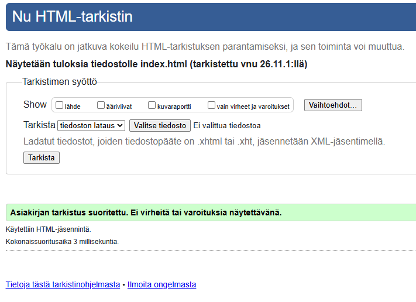
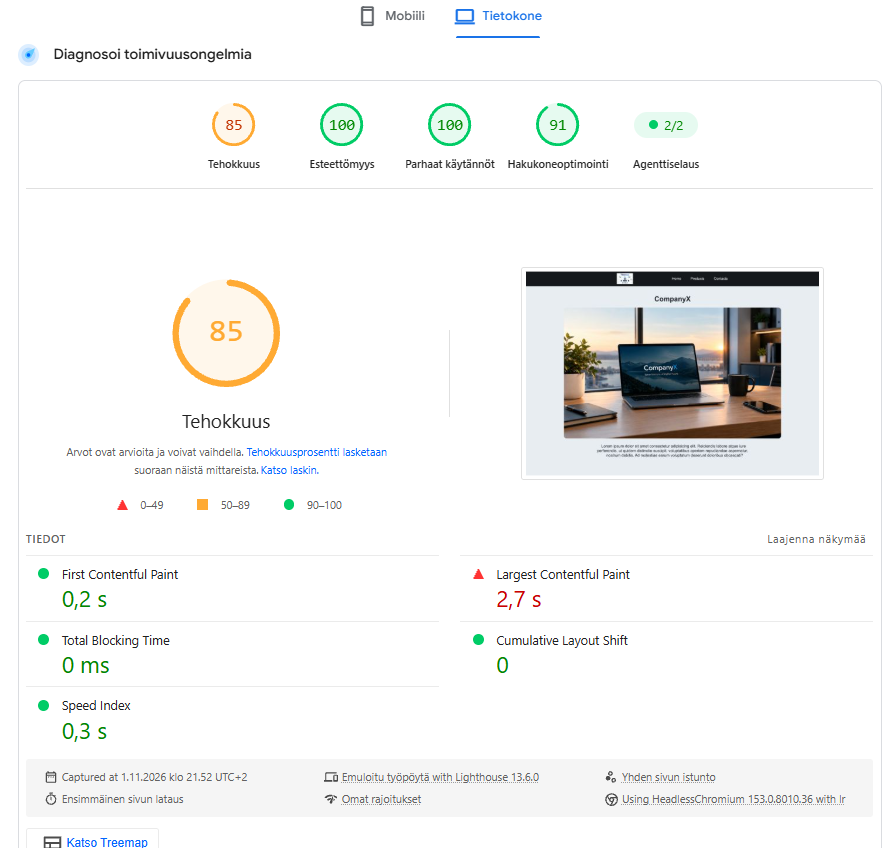
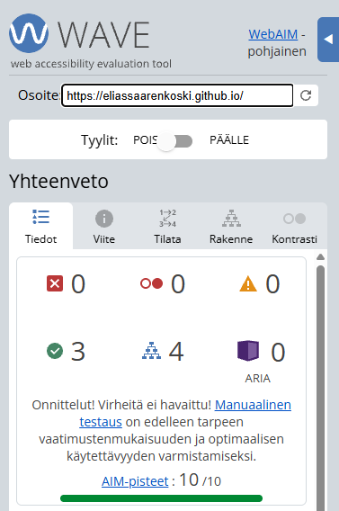

Pahoittelut jos tehokkuus on 85 pistettä. Minulla on ylimääräisiä tiedostoja githubissa, koska jouduin säätämään sen kanssa että löytää okean polun. En sitten vielä tajua miten poistan jo julkaistusta versiosta dublikaatit
